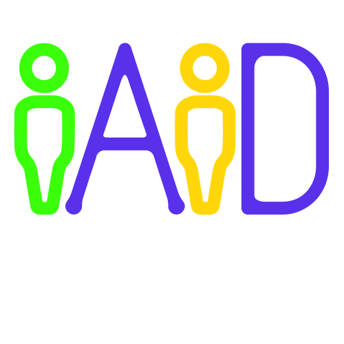

Inter‑ActiveID ayuda a profesionales, emprendedores y empresas a mantenerse accesibles, memorables y conectados mucho después de terminada la conversación.
Inter‑ActiveID helps professionals, entrepreneurs and businesses remain accessible, memorable and connected long after the conversation ends.
Todos los días se pierden oportunidades valiosas porque la información de contacto es olvidada, extraviada o simplemente nunca vuelve a consultarse.
Conoce a alguien durante una reunión, una convención o una actividad de networking.
Intercambian información.
La reunión termina.
Días o semanas después aparece una oportunidad de negocio.
Ese prospecto desea volver a encontrarle.
No recuerda dónde guardó su tarjeta.
No encuentra su correo electrónico.
No recuerda el nombre de su empresa.
Y es precisamente en ese momento cuando muchas oportunidades se pierden.
Valuable opportunities are lost every day because contact information is forgotten, misplaced or simply never revisited.
You meet someone during a business meeting, convention or networking event.
Information is exchanged.
The meeting ends.
Days or weeks later an opportunity appears.
That prospect wants to reconnect.
The business card cannot be found.
The email address was never saved.
The company name is forgotten.
And that is precisely when valuable opportunities are lost.
Las tarjetas de presentación comparten información.
Las páginas de enlaces organizan información.
Los sitios web presentan información.
Inter‑ActiveID ayuda a que su negocio permanezca presente en la mente del cliente, porque el verdadero desafío no es compartir información.
Business cards share information.
Link pages organize information.
Websites present information.
Inter‑ActiveID helps your business remain present in the customer's mind, because the real challenge is not sharing information.
Las oportunidades de negocio no siempre aparecen durante una reunión.
Muchas veces surgen días, semanas o incluso meses después.
Cuando ese momento llega, resulta fundamental que sus clientes y prospectos puedan volver a encontrarle fácilmente.
Inter‑ActiveID fue diseñado precisamente para ayudarle en ese momento.
Para ayudarle a mantenerse accesible.
Para ayudarle a mantenerse memorable.
Para ayudarle a mantenerse conectado.
Business opportunities do not always happen during the meeting itself.
Many opportunities appear days, weeks or even months later.
When that moment arrives, prospects and customers need an easy way to find you again.
Inter‑ActiveID was designed specifically for that moment.
To help you remain accessible.
To help you remain memorable.
To help you remain connected.
Inter‑ActiveID es una solución de presencia empresarial diseñada para ayudar a que las personas puedan fácilmente volver a encontrar su negocio cuando surjan nuevas oportunidades.
No se trata únicamente de compartir información.
Se trata de facilitar que las personas puedan encontrarle, recordarle y volver a contactarle cuando estén listas para dar el siguiente paso.
Inter‑ActiveID ayuda a que su presencia profesional continúe trabajando incluso después de terminada la reunión.
Inter‑ActiveID is a business presence solution designed to help people easily find your business again whenever new opportunities arise.
It is not only about sharing information.
It is about making it easier for people to find you, remember you and reconnect when they are ready to take the next step.
Inter‑ActiveID helps your professional presence continue working long after the meeting ends.
Cada Inter‑ActiveID se diseña específicamente para su empresa, emprendimiento o marca personal.
Los colores corporativos, imágenes y elementos visuales pueden alinearse con la identidad gráfica de su organización para fortalecer la recordación de marca y transmitir profesionalismo.
O podemos proponer un diseño pensado en resaltar sus servicios o productos de acuerdo al público meta.
Las personas hacen negocios con empresas que ganan su confianza y esta es la gran ventaja de Inter‑ActiveID.
Genera en el cliente un estado de confianza al poder acceder a toda su información fácilmente mediante una experiencia premium.
Cuando llega el momento de tomar una decisión, la confianza suele ser el factor que inclina la balanza.
Una tarjeta impresa queda obsoleta cuando cambia un número telefónico, dirección, correo electrónico, sitio web o logotipo.
Con Inter‑ActiveID su información puede mantenerse actualizada sin necesidad de volver a imprimir materiales o reemplazar inventario existente.
Su presencia empresarial evoluciona al mismo ritmo que su negocio.
Imagine encontrarse en una convención, feria comercial o evento de networking donde aparecen oportunidades valiosas de contacto y simplemente ya no le quedan tarjetas para entregar.
Inter‑ActiveID elimina esa preocupación por completo.
Puede compartir su información diez veces, cien veces o diez mil veces. Su presencia empresarial continuará disponible cada vez que aparezca una nueva oportunidad.
¿Usted recuerda cuando deseaba darle la información de su negocio a una persona que acababa de conocer y representaba una excelente oportunidad comercial, pero no tenía tarjetas disponibles en ese momento?
¡Con Inter‑ActiveID nunca pierde oportunidades!
Every Inter‑ActiveID is designed specifically for your company, business or personal brand.
Corporate colors, imagery and visual elements can align with your existing identity to strengthen brand recognition and communicate professionalism.
Or we can propose a design focused on highlighting your products and services according to your target audience.
People do business with companies they trust.
One of Inter‑ActiveID's greatest advantages is that it gives customers easy access to your information through a premium experience.
Trust often becomes the deciding factor when opportunities appear.
Printed business cards become outdated when phone numbers, email addresses, websites or logos change.
Inter‑ActiveID keeps your information current without reprinting materials or replacing inventory.
Your business presence evolves together with your business.
Imagine attending a trade show, convention or networking event and discovering you have no more cards left to share.
Inter‑ActiveID removes that concern completely.
Whether you share your information ten times or ten thousand times, your business presence remains available whenever opportunities appear.
Have you ever met someone who represented a great opportunity, only to realize you had no business card available?
With Inter‑ActiveID, opportunities never disappear because you ran out of cards.
Inter‑ActiveID ayuda a que su negocio permanezca accesible cuando los clientes están listos para tomar una decisión.
Ayuda a fortalecer la recordación de marca mediante una experiencia profesional y consistente.
Facilita futuras conexiones comerciales eliminando obstáculos innecesarios entre usted y sus prospectos.
Reduce la dependencia de materiales impresos, evita cualquier error en el nombre o información de contacto y permite que su presencia continúe trabajando incluso después de terminada una reunión.
Inter‑ActiveID helps keep your business accessible when prospects are ready to make a decision.
It strengthens brand recall through a professional and consistent experience.
It supports future business connections by removing unnecessary barriers.
It reduces reliance on printed materials, avoids contact-information mistakes and allows your presence to keep working long after the meeting ends.
Cada elemento de Inter‑ActiveID fue diseñado para facilitar que los clientes puedan volver a encontrarle, volver a contactarle y actuar cuando estén listos para hacerlo.
Es posible que alguna vez haya conocido a un cliente cuyo nombre, apellido o dirección de correo electrónico eran difíciles de escribir correctamente.
Los errores al guardar información de contacto son más comunes de lo que parecen y pueden dificultar futuras comunicaciones.
Inter‑ActiveID permite guardar su información en los contactos del dispositivo en segundos y sin errores.
Cuando un cliente decide volver a contactarle, cada paso adicional representa una barrera.
Con sólo un clic el cliente puede contactarle por WhatsApp.
No hay necesidad de agregar un contacto al teléfono manualmente antes de iniciar la conversación.
Menos pasos significan más posibilidades de comunicación.
Muchos clientes desean escribir un correo electrónico, pero postergan el primer mensaje porque no saben cómo iniciarlo.
Esto se conoce como el síndrome de la hoja en blanco: el momento en que una persona desea comunicarse, pero no encuentra las palabras adecuadas para comenzar la conversación.
Con Inter‑ActiveID, tanto el mensaje de WhatsApp como el correo electrónico pueden mostrar una plantilla básica personalizada según sus necesidades.
Esto reduce la sensación de presión y ayuda a fomentar la comunicación.
¿Y qué información puede mostrar mediante Inter‑ActiveID?
Estas son algunas de las opciones más utilizadas:
Todo disponible desde una sola experiencia profesional y fácil de compartir.
Every part of Inter‑ActiveID was designed to make it easier for customers to find you again, reconnect and take action when they are ready.
Have you ever met someone whose name, email address or contact information was difficult to enter correctly?
Contact entry mistakes are more common than most people realize and can complicate future communication.
Inter‑ActiveID allows your information to be saved directly into the device contacts in seconds and without errors.
When a customer decides to reconnect, every extra step becomes a barrier.
With a single click, customers can contact you through WhatsApp.
There is no need to manually add a new contact before starting the conversation.
Fewer steps mean more opportunities to communicate.
Many customers delay sending the first email because they do not know how to begin.
This is often called blank-page syndrome: the moment someone wants to communicate but cannot find the right words to start.
Inter‑ActiveID allows both WhatsApp and email messages to open with a customizable starter template.
This reduces pressure and encourages communication.
What kind of information can you share through Inter‑ActiveID?
Some of the most popular options include:
All accessible through one professional and easy-to-share experience.
Los gráficos, logotipos e íconos mantienen máxima calidad independientemente del dispositivo o tamaño de pantalla utilizado por el cliente.
Su imagen empresarial siempre se mostrará de forma profesional, clara y consistente.
Branding personalizado, colores corporativos e identidad visual profesional trabajan en conjunto para fortalecer la imagen de su negocio.
Máxima recordación de marca.
Experiencia del usuario premium.
El logotipo de la empresa se visualiza con máxima calidad en cualquier dispositivo o pantalla.
Graphics, logos and icons maintain exceptional quality regardless of device type or screen size.
Your business image remains professional, clear and visually consistent.
Custom branding, corporate colors and professional visual identity work together to strengthen your business image.
Maximum brand recall.
Premium customer experience.
Your company logo maintains maximum quality across all devices and displays.
Cada pequeña decisión tiene un impacto.
Elegir una solución digital en lugar de miles de tarjetas impresas ayuda a reducir el consumo de papel, tinta y otros recursos asociados a la impresión tradicional.
Pero ser eco responsable va más allá de eliminar papel.
Inter‑ActiveID se hospeda en servidores cuya compañía compra créditos de energía renovable para compensar la energía utilizada por su sitio web.
Esto ayuda a que su Tarjeta Interactiva de Negocios Inter‑ActiveID sea carbono neutral.
Porque innovar no solamente significa adoptar nuevas tecnologías.
También significa asumir responsabilidad con el futuro.
Every small decision creates an impact.
Choosing a digital solution instead of thousands of printed business cards helps reduce paper consumption, printing materials and waste.
But environmental responsibility goes beyond eliminating paper.
Inter‑ActiveID is hosted on servers whose provider purchases renewable energy credits to offset the energy consumed by your website.
This helps make your Inter‑ActiveID Business Card carbon neutral.
Because innovation is not only about technology.
It is also about responsibility toward the future.
La recomendación de un cliente satisfecho continúa siendo una de las formas más valiosas de promoción.
Inter‑ActiveID recompensa a quienes recomiendan el servicio a otros profesionales, emprendedores y empresarios.
Por cada referido efectivo que adquiera un Inter‑ActiveID se reconocerá un monto de ₡10.000.
Los primeros ₡40.000 acumulados mediante referidos se aplicarán a la renovación anual de su membresía.
A partir del quinto referido efectivo los incentivos podrán recibirse mediante SINPE Móvil.
Al finalizar cada período anual, el conteo de referidos se reinicia para el siguiente ciclo.
Muchas personas han descubierto que recomendar Inter‑ActiveID no sólo ayuda a otros negocios, sino que también puede reducir significativamente sus propios costos de renovación.
Recommendations from satisfied customers remain one of the most valuable forms of promotion.
Inter‑ActiveID rewards people who introduce the service to other professionals, entrepreneurs and business owners.
For every successful referral that purchases an Inter‑ActiveID, a credit of ₡10,000 is recognized.
The first ₡40,000 earned through successful referrals is applied toward annual membership renewal.
Beginning with the fifth successful referral, rewards may be received through SINPE Móvil.
Referral accumulation restarts at the beginning of each annual cycle.
Many customers discover that recommending Inter‑ActiveID not only helps other businesses, but can also significantly reduce their own renewal costs.
La mejor manera de comprender Inter‑ActiveID es experimentarlo.
Explore una implementación real y descubra cómo la presencia empresarial, la accesibilidad, la recordación de marca y la facilidad de contacto trabajan juntas en una sola experiencia.
The best way to understand Inter‑ActiveID is to experience it.
Explore a real implementation and see how business presence, accessibility, brand recall and communication come together in a single experience.
Inter‑ActiveID ayuda a transformar una simple presentación en una presencia empresarial duradera.
Manténgase accesible.
Manténgase memorable.
Manténgase conectado.
Inter‑ActiveID helps transform a simple introduction into a lasting business presence.
Stay accessible.
Stay memorable.
Stay connected.